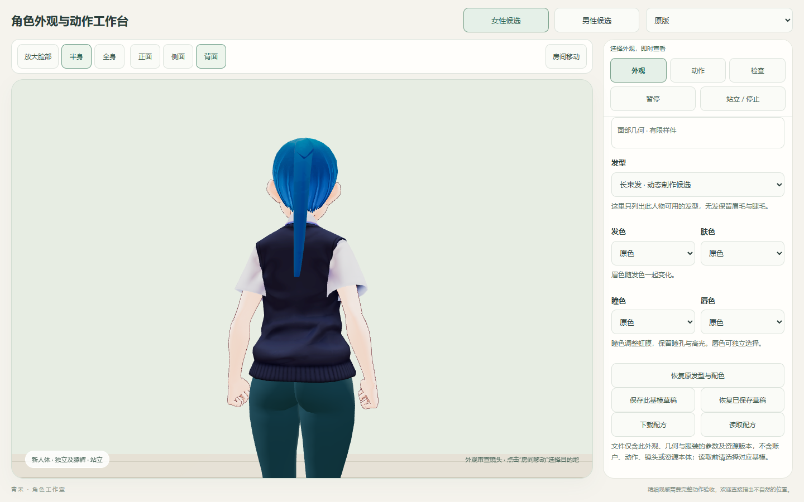
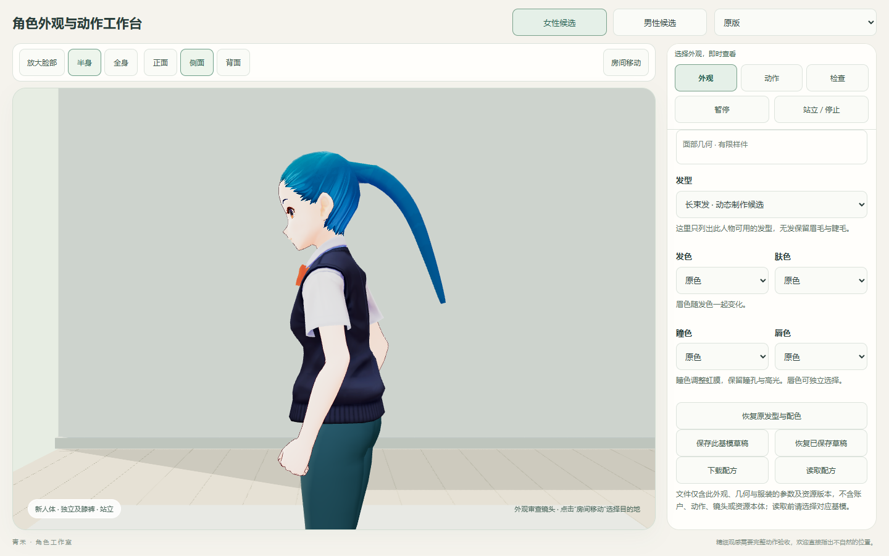
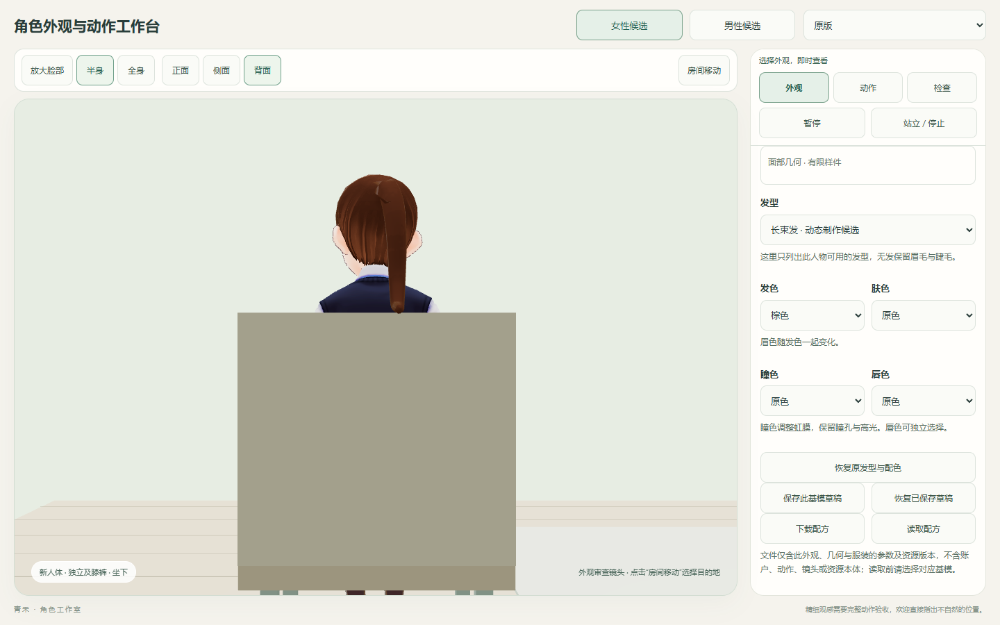
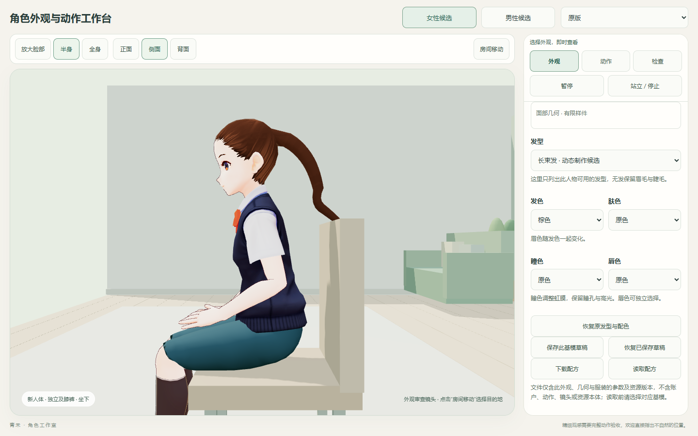
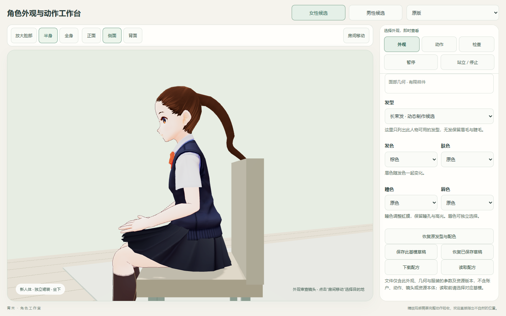
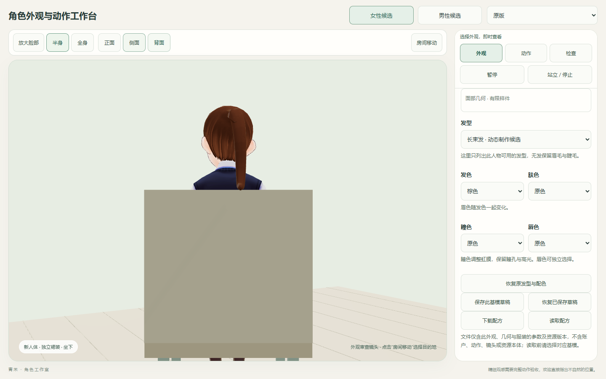

原版构建 508ccb12b857，新版构建 8b37d9f853e2。新版源码 11033125c07c64690da2a87ede250d57f63f318b。各原片保留完整内容与自身构建身份。
两片加载起点独立，播放器默认 1×，请各自播放并按同名阶段原图对照。未作精确动作相位同步或裁剪。局部折弯、椅背接触和大幅甩动的连续观感仍由主线抽审。
新版核心完整抽帧 · 新版接触完整抽帧 · 对照身份、文件哈希与数值
单位 mm。坐稳快照与每 200 ms 过程采样来自不同时间点，分别列出。此数值仅为蒙皮顶点在椅子 OBB 内的局部深度，完整三角穿透与连续碰撞仍未验证。
| 记录范围 | 508ccb12b857 | 8b37d9f853e2 |
|---|---|---|
| 原裤装 / 原椅，坐稳单次快照 | 19.03 | 1.84 |
| 裙装 / 移位椅，坐稳单次快照 | 19.11 | 1.71 |
| 原裤装 / 原椅，阶段过程采样峰值 | 17.36 | 1.13 |
| 裙装 / 移位椅，阶段过程采样峰值 | 19.71 | 1.75 |
接触显著减少，仍有约 1–2 mm 盒内深度及局部折弯、大幅甩动待审。数值和技术流程完成后，零穿模与人工认可结论仍未建立。
新版各阶段 appearance.updateDynamics 计时 P95 最高 0.20 ms，单样本峰值 0.80 ms，不含衣物更新与渲染。裙装行走 rAF 间隔单峰 60.70 ms 保留。计时来自带视频与几何诊断的开发机，普通电脑仍未验证。









